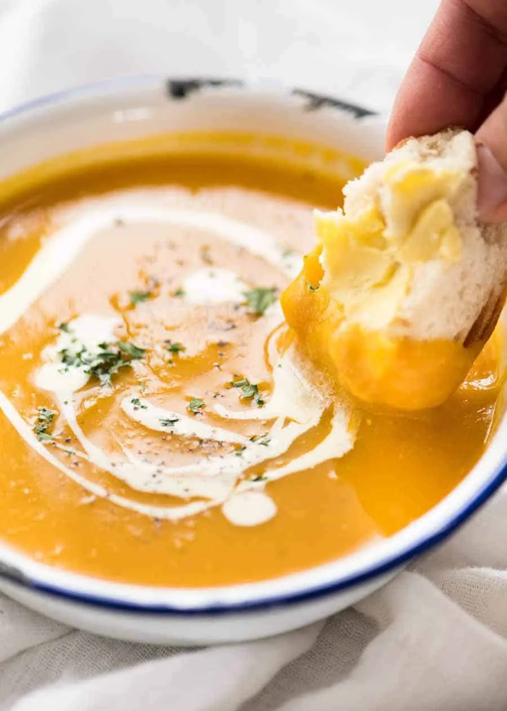

Pumpkin Soup

Description
A classic recipe - creamy, irresistable and easy to make. Don't forget to get some crusty bread for dunking.
Ingredients
- 1.2kg pumpkin
- 1 onion, sliced
- 2 garlic cloves, peeled whole
- 3 cups vegetable or chicken broth/stock
- 1 cup water
- Salt and pepper, to taste
- 1/2-3/4 cup cream
- Fresh parsley, to garnish (optional)
Steps
- Cut the pumpkin into 3cm slices. Cut the skin off and scrape seeds out. Cut the slices into 4cm chunks
- Place the pumpkin, onion, garlic, broth and water in a pot (liquid won't quite cover all the pumpkin). Bring to a boil, uncovered, then reduce heat and let simmer rapidly until pumpkin is tender - about 10 minutes.
- Remove from heat and use a stick blender to blend until smooth.
- Season to taste with salt and pepper, stir through cream.
- Ladle soup into bowls, drizzle over a bit of cream, sprinkle with pepper and parsley if desired. Serve with crusty bread!